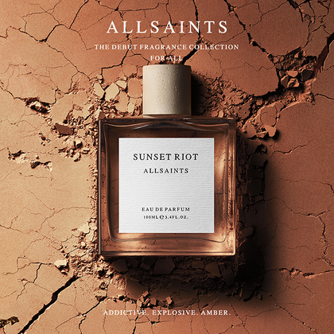
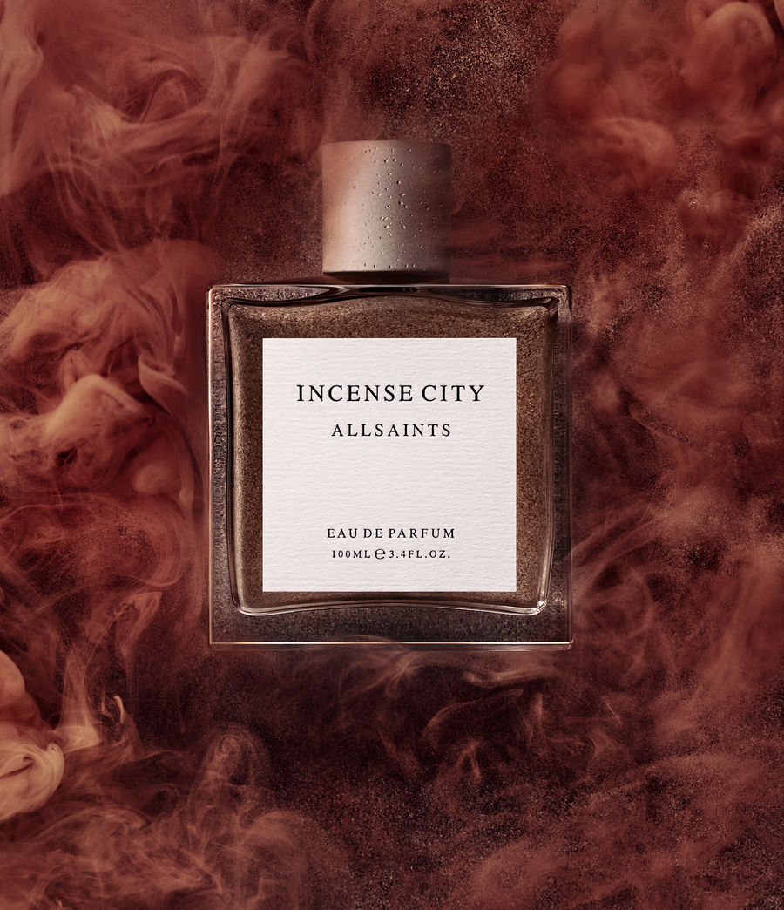
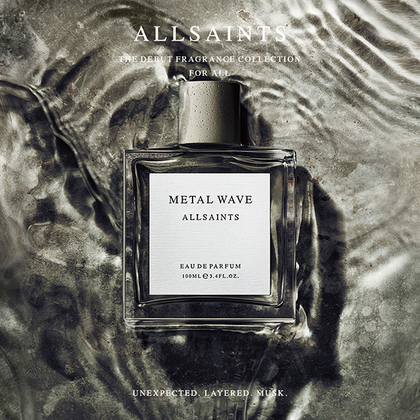
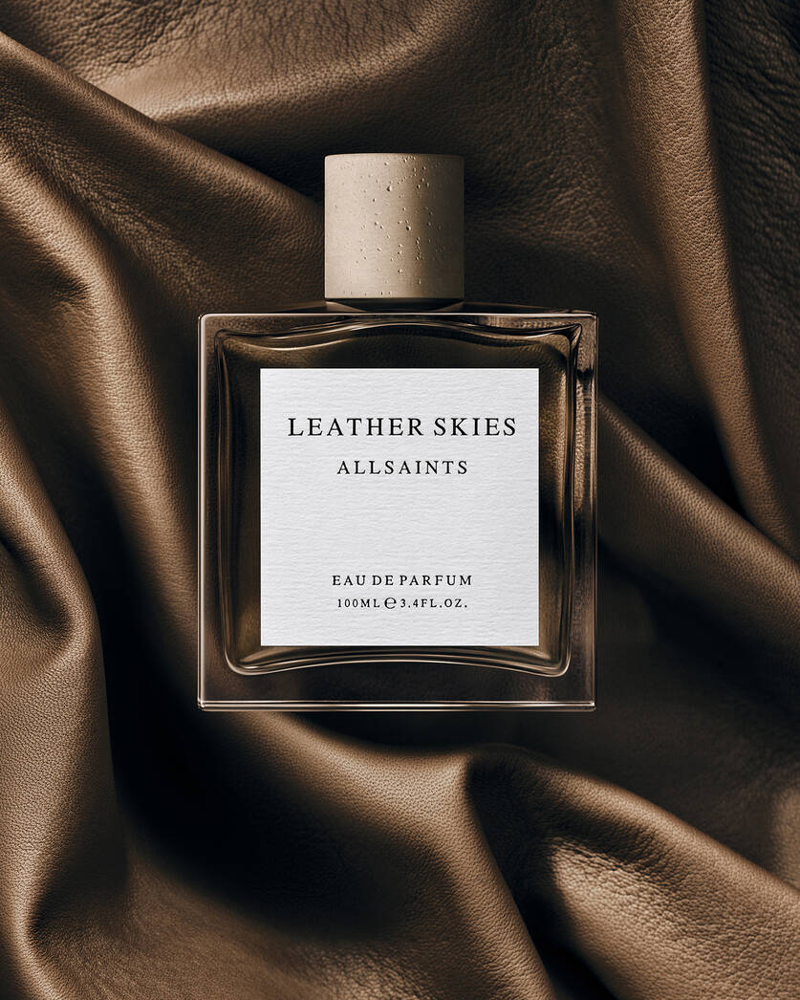
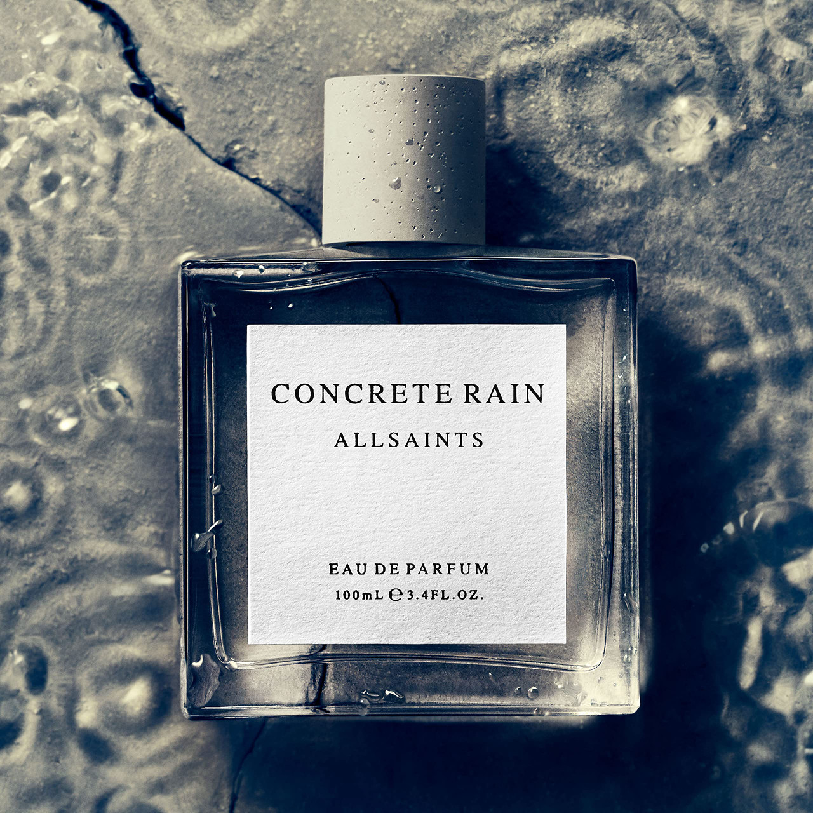
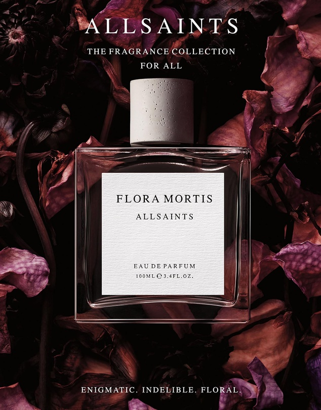

Sunset Riot:
Allsaints Sunset Riot is a unisex fragrance created
by the British fashion brand Allsaints.
It was released in 2018 and is described as a “sensual and vibrant” scent.
The fragrance is a mix of floral, woody,
and citrus notes, making it a perfect choice for both men and women.

Incense City:
Incense City by Allsaints is a Woody
Floral Musk fragrance for women and men.
Incense City was launched in 2018

Metal Wave:
Metal Wave is inherently masculine, industrial, and familiar.
A wave is abstract yet natural and ever lining.
The integration of the two creates an uncommon,
unbreakable connection leaving nothing but wonder in its wake

Leather Skies:
Primal, sensual, leather. Leather Skies is a woody leather fragrance.
A pleasant addition to our exclusive unisex fragrance collection.

Concrete Rain:
Don't leave home without AllSaints fragrance.
Designed for women and men,
they are unisex. Made to evoke the senses with contradictory scents.
It's time to find the new you.

Flora Mortis:
An enigmatic and indelible floral that evokes a smoky halo
around the scent with amber wood, leaving a sensual
and contrasting trail.